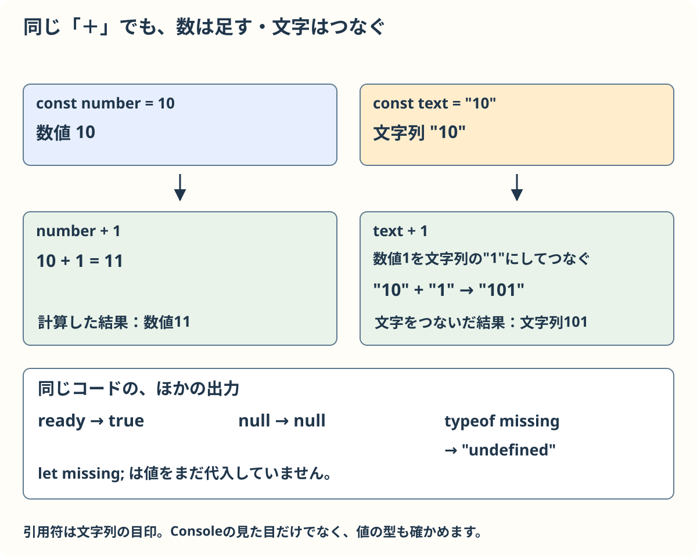
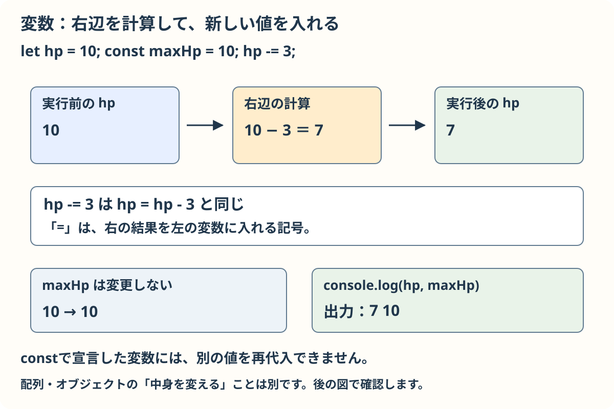
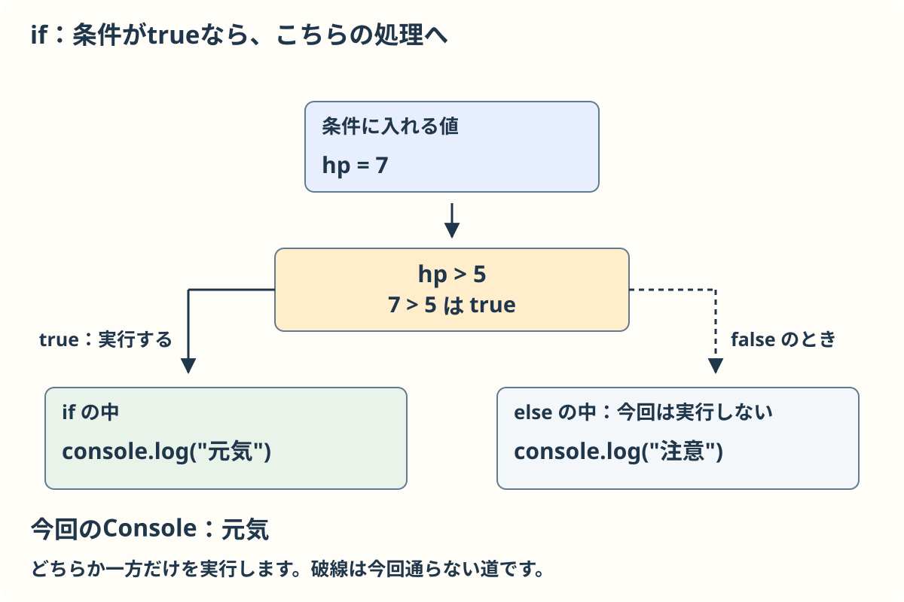
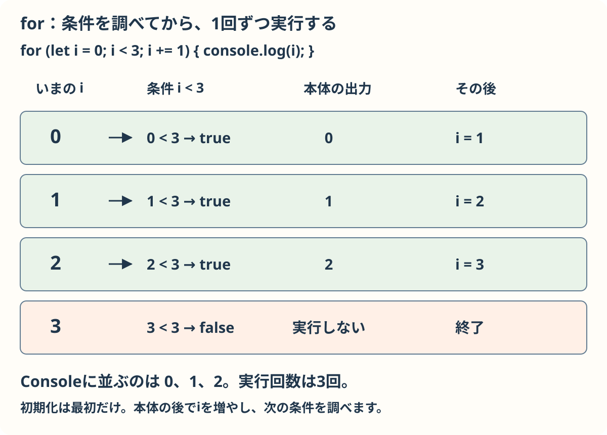
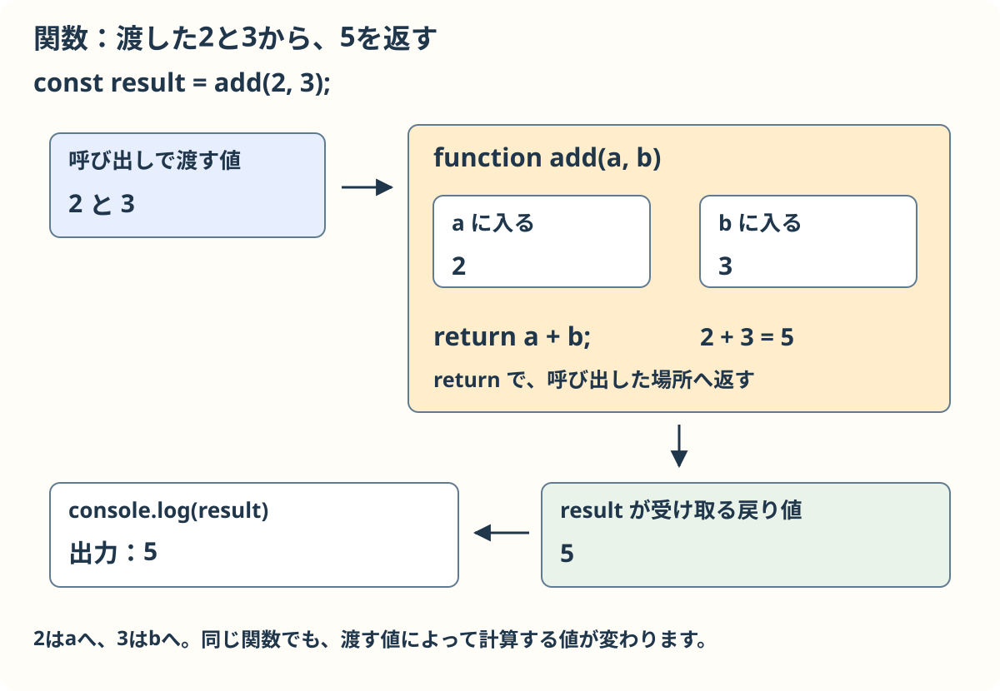
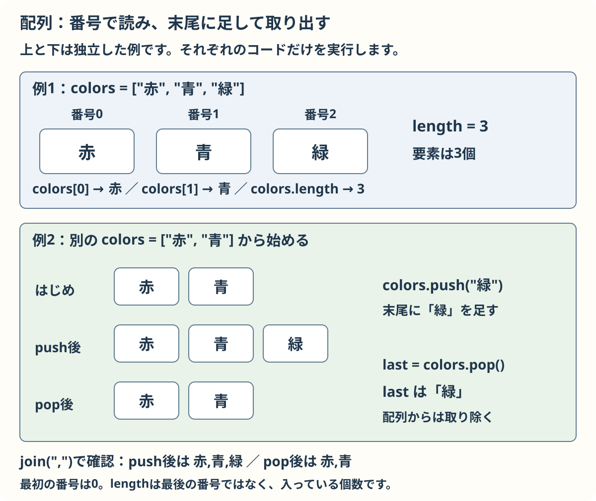
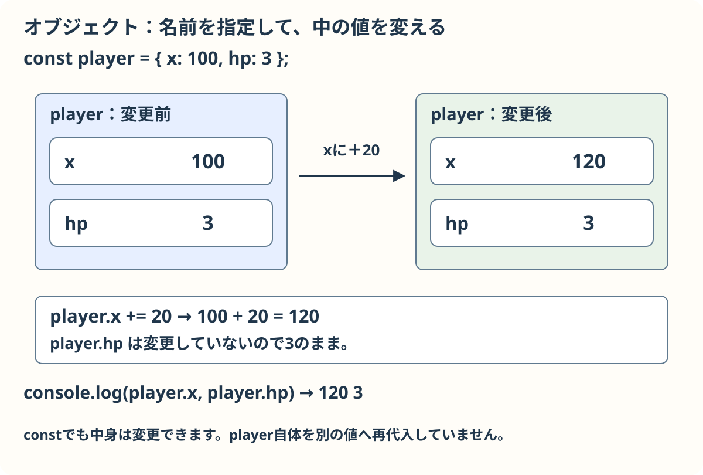
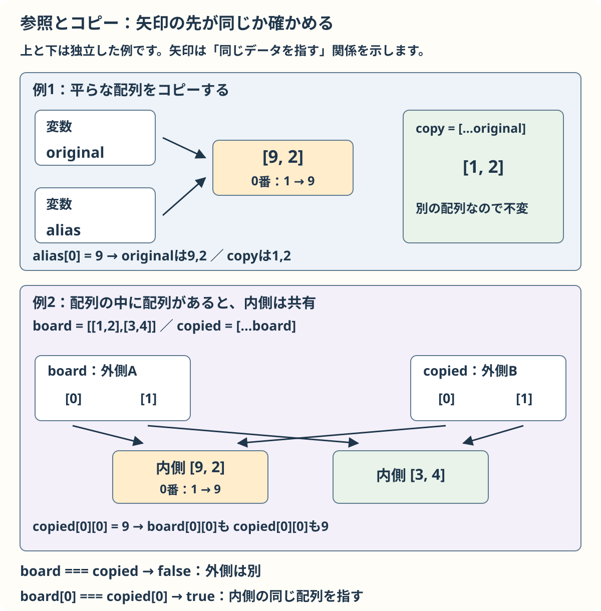
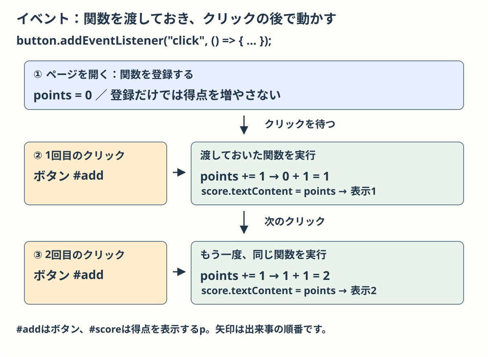

JavaScriptの基本文法
ゲームの値を変えたり、操作を受け取ったりする書き方を学びます。基本から必要な節を選んでください。補足と上級は後から読めます。
準備と操作の「ひな型をダウンロード（ZIP）」から練習用の3ファイルを用意します。各Consoleの例は独立しています。作業用フォルダーの script.js を開き、function start() { } の波括弧の中に例を入れて保存します。作業用フォルダーの index.html を開くか再読み込みし、ブラウザーの開発者ツールのConsoleを見ます。次の例は前の例を消してから入れてください。ゲーム画面ではなくConsoleに結果が出ます。
基本：文と記号
JavaScriptは指示を順に読みます。一つの指示を文と呼びます。文の終わりには ; を付け、まとまった処理は { } で囲みます。文字を表す値は引用符で囲みます。大文字と小文字は区別するので、score と Score は別の名前です。
独立した例：前の例を消して、練習用 script.js の start() の中に入れます。
const score = 3;
console.log("得点", score);Consoleに「得点 3」と出ます。文の途中の記号、引用符、括弧は半角で入力します。
確認：scoreとScoreは同じ名前？
違います。大文字と小文字を区別します。
基本：値と変数
数の10、文字の "10"、正しいかどうかの true / false は別の種類の値です。null は値がないことを明示する値、undefined はまだ値が入っていないときなどの値です。
独立した例：前の例を消して、練習用 script.js の start() の中に入れます。
const number = 10;
const text = "10";
const ready = true;
let missing;
console.log(number + 1, text + 1, ready, null, typeof missing);
数の10に1を足すと11、文字の「10」に1をつなぐと「101」です。typeof missing は "undefined" と表示します。
値に名前を付ける場所を変数といいます。let で作った変数には後で別の値を入れられます。const は別の値を再代入できません。
独立した例：前の例を消して、練習用 script.js の start() の中に入れます。
let hp = 10;
const maxHp = 10;
hp -= 3;
console.log(hp, maxHp);
= は右の値を左に入れる代入です。hp -= 3 は hp = hp - 3 と同じです。
確認：hpは最後にいくつ？
10から3を引くので7です。
基本：計算と比較
+、-、*、/ は足し算、引き算、掛け算、割り算です。% は割った余りです。+= などは計算して同じ変数に入れる短い書き方です。
独立した例：前の例を消して、練習用 script.js の start() の中に入れます。
let score = 5;
score += 2;
console.log(score, 7 % 4, 3 * 2);=== と !== は種類も含めて等しいか、違うかを比べます。>、<、>=、<= は大小を比べます。&& は両方、|| は少なくとも一方、! は真偽を反対にします。
独立した例：前の例を消して、練習用 script.js の start() の中に入れます。
const hp = 7;
const hasKey = true;
console.log(hp > 5 && hasKey, hp === "7", !hasKey);7と文字列の「7」は種類が違うので === では等しくありません。
++ は値を1増やします。単独の文 count++; は count += 1; と同じように1増やせます。
let count = 2;
count++;
console.log(count);|| は真偽値だけでなく値も返します。左が0などの偽として扱われる値なら、右の値を返します。
const length = 0 || 1;
console.log(length);例えば、長さが0のとき割り算に使う数を1にする場合に使います。
確認：7 % 4は？
7を4で割った余りの3です。
基本：条件で分ける
条件が正しいときだけ処理を行うには if を使います。正しい・正しくないは真・偽とも呼びます。
独立した例：前の例を消して、練習用 script.js の start() の中に入れます。
const hp = 7;
if (hp > 5) {
console.log("元気");
} else {
console.log("注意");
}
7は5より大きいので「元気」です。条件を増やすときは else if を間に書きます。
独立した例：前の例を消して、練習用 script.js の start() の中に入れます。
const hp = 3;
if (hp === 0) {
console.log("終了");
} else if (hp <= 3) {
console.log("注意");
} else {
console.log("元気");
}短い値の選択には 条件 ? 真の値 : 偽の値 も使えます。同じ値と複数の候補を比べるときは switch も使えます。break はその場合の処理を終えます。
独立した例：前の例を消して、練習用 script.js の start() の中に入れます。
const state = "play";
const label = state === "play" ? "プレイ中" : "停止";
switch (state) {
case "play":
console.log(label);
break;
default:
console.log("その他");
}確認：hpが3の例ではどの条件に入る？
hpは0ではなく、3以下なので「注意」です。
基本：繰り返す
同じ処理を何度か行うには繰り返しを使います。for は最初の値、続ける条件、毎回の更新を順に書きます。
独立した例：前の例を消して、練習用 script.js の start() の中に入れます。
for (let i = 0; i < 3; i += 1) {
console.log(i);
}
0、1、2を表示し、iが3になると条件が偽になって止まります。for...of は配列の値を順に取り出します。while は条件が真の間だけ続きます。
独立した例：前の例を消して、練習用 script.js の start() の中に入れます。
const colors = ["赤", "青"];
for (const color of colors) {
console.log(color);
}
let count = 0;
while (count < 2) {
count += 1;
}
console.log(count);break は繰り返し全体を終え、continue はその回の残りを飛ばして次へ進みます。
独立した例：前の例を消して、練習用 script.js の start() の中に入れます。
for (let i = 0; i < 5; i += 1) {
if (i === 1) continue;
if (i === 3) break;
console.log(i);
}確認：iが1のとき表示する？
continueでその回を飛ばすので表示しません。
基本：処理をまとめる
処理に名前を付けて、必要なときに呼び出せます。このまとまりを関数といいます。呼び出し時に渡す値を引数、返す結果を戻り値といいます。
独立した例：前の例を消して、練習用 script.js の start() の中に入れます。
function add(a, b) {
return a + b;
}
const result = add(2, 3);
console.log(result);
2がa、3がbに入り、return で5を返します。関数の中で作った変数はその外からは使えません。この使える範囲をスコープといいます。
独立した例：前の例を消して、練習用 script.js の start() の中に入れます。
function double(value) {
const result = value * 2;
return result;
}
console.log(double(4));引数が渡されないときに使う値を、引数の名前の後に書けます。処理の途中で return すると、残りを実行せずに関数を終えます。
function addPoint(score = 0) {
if (score < 0) return 0;
return score + 1;
}
console.log(addPoint(), addPoint(2), addPoint(-1));引数なしなら0を使って1、2なら3です。負の数なら早くreturnするので0です。
確認：add(2, 3)が返す値は？
2 + 3で5です。
基本：値を並べる
複数の値を順番に入れたものを配列といいます。番号は0から始まり、length は数です。
独立した例：前の例を消して、練習用 script.js の start() の中に入れます。
const colors = ["赤", "青", "緑"];
console.log(colors[0], colors[1], colors.length);push は末尾に追加し、pop は末尾を取り出します。次の例では追加後が「赤,青,緑」、取り出した値が「緑」で、その後は「赤,青」です。join はその時点の並びを文字列にして表示します。const は配列そのものの再代入を禁止しますが、中身の変更はできます。
独立した例：前の例を消して、練習用 script.js の start() の中に入れます。
const colors = ["赤", "青"];
colors.push("緑");
console.log(colors.join(","));
const last = colors.pop();
console.log(last, colors.join(","));
確認：colors[1]は？
0から数えるので「青」です。
基本：名前で値をまとめる
関連する値を名前付きでまとめたものをオブジェクトといいます。それぞれの名前と値の組をプロパティと呼びます。player.x のように取り出します。
独立した例：前の例を消して、練習用 script.js の start() の中に入れます。
const player = { x: 100, hp: 3 };
player.x += 20;
console.log(player.x, player.hp);
player 自体を別の値に再代入しなくても、中の x を変更できます。
確認：player.hpは最後にいくつ？
xだけを変えたので3のままです。
補足：同じものとコピー
配列やオブジェクトを別の変数に代入すると、同じものを指します。一方、... で中身を広げて新しい配列やオブジェクトを作れます。
独立した例：前の例を消して、練習用 script.js の start() の中に入れます。
const original = [1, 2];
const alias = original;
const copy = [...original];
alias[0] = 9;
console.log(original.join(","), copy.join(","));originalとaliasは同じ配列なので両方で9、2が見えます。copyは別の配列なので1、2のままです。これは浅いコピーです。中にさらに配列やオブジェクトがあれば、その内側は共有されます。
次も前の例を消し、startの中に入れます。
const board = [[1, 2], [3, 4]];
const copied = [...board];
copied[0][0] = 9;
console.log(board[0][0], copied[0][0], board === copied, board[0] === copied[0]);
外側の配列は別なので board === copied はfalseです。内側の最初の配列は同じなので board[0] === copied[0] はtrueで、どちらの最初の数も9になります。
値を取り出して別の名前に入れる書き方を分割代入といいます。
独立した例：前の例を消して、練習用 script.js の start() の中に入れます。
const point = { x: 3, y: 4 };
const { x, y } = point;
const [first, second] = ["赤", "青"];
console.log(x, y, first, second);確認：alias[0]を変えたときoriginalは？
同じ配列を指すのでoriginal[0]も9です。
補足：関数を渡す
関数も値として渡せます。渡された関数を後から呼ぶ仕組みをコールバックと呼びます。() => ... は関数を短く書くアロー関数です。
独立した例：前の例を消して、練習用 script.js の start() の中に入れます。
const numbers = [1, 2, 3];
const doubled = numbers.map(value => value * 2);
const large = numbers.filter(value => value > 1);
const found = numbers.find(value => value === 2);
console.log(doubled, large, found);map は各値を変えて新しい配列、filter は条件に合う値の新しい配列、find は最初に合う一つの値を返します。見つからないときのfindは undefined です。元の numbers は変わりません。
関数名に () を付けるとその場で呼びます。関数そのものを渡すと、受け取った側が後で呼べます。
独立した例：前の例を消して、練習用 script.js の start() の中に入れます。
function say() {
console.log("こんにちは");
}
const action = say;
action();forEach は配列の値を順に関数へ渡して処理します。新しい配列を作る map とは役割が違います。
const names = ["赤", "青"];
names.forEach(name => console.log(name));確認：findで一致する値がなければ？
undefinedが返ります。
基本：画面と操作
HTMLの要素をJavaScriptから見つけて内容を変えられます。画面の部品のつながりをDOMと呼びます。クリックなどの出来事はイベントです。
練習見本を開き、ボタンを押してください。demo フォルダーを丸ごとコピーし、その中の script.js 全体を次のコードに置き換えても同じ動きを試せます。見本の demo/index.html には id="add" のボタンと id="score" の表示が用意されています。この例はひな型のstartの中には入れません。
const button = document.querySelector("#add");
const score = document.querySelector("#score");
let points = 0;
button.addEventListener("click", () => {
points += 1;
score.textContent = points;
});
querySelector("#add") はidがaddのボタンを選びます。addEventListener には関数を渡し、押されたときに関数が呼ばれます。textContent で得点の文字を変えます。1回押すと1、2回押すと2です。
CanvasもHTMLの要素です。ひな型では document.querySelector("#game-canvas") でCanvasを選び、getContext("2d") で描く道具を得ます。その後 draw() で描きます。
確認：この例で関数が呼ばれるのはいつ？
ボタンをクリックしたときです。
補足：よく使う道具
Math.floor は小数を下の整数にし、Math.min と Math.max は小さい方・大きい方を選びます。Math.random() は0以上1未満の数を返します。
独立した例：前の例を消して、練習用 script.js の start() の中に入れます。
console.log(Math.floor(2.8), Math.min(4, 7), Math.max(4, 7));Math.floor(Math.random() * 3) は0、1、2のどれかです。例えば乱数が0.8なら0.8×3=2.4なので2になります。乱数の結果は毎回変わり得ます。
次も前の例を消して start() の中に入れます。Consoleには0、1、2のどれかが出ます。
const index = Math.floor(Math.random() * 3);
console.log(index);確認：乱数が0.8のとき floor(0.8 * 3) は？
2.4を下の整数にして2です。
上級への橋渡し：クラス
似た値と処理を持つものを何個も作る書き方がクラスです。new は新しい実体を作り、this は今の実体自身を表します。初めは関数やオブジェクトに慣れてからで大丈夫です。
独立した例：前の例を消して、練習用 script.js の start() の中に入れます。
class Player {
constructor(x) { this.x = x; }
move(amount) { this.x += amount; }
}
const a = new Player(100);
const b = new Player(200);
a.move(10);
console.log(a.x, b.x);aだけを動かしたので110と200です。別々の実体を作る図も参照できます。図は本棚と引き出しの例です。
確認：aを動かすとbの位置も変わる？
別々の実体なので変わりません。